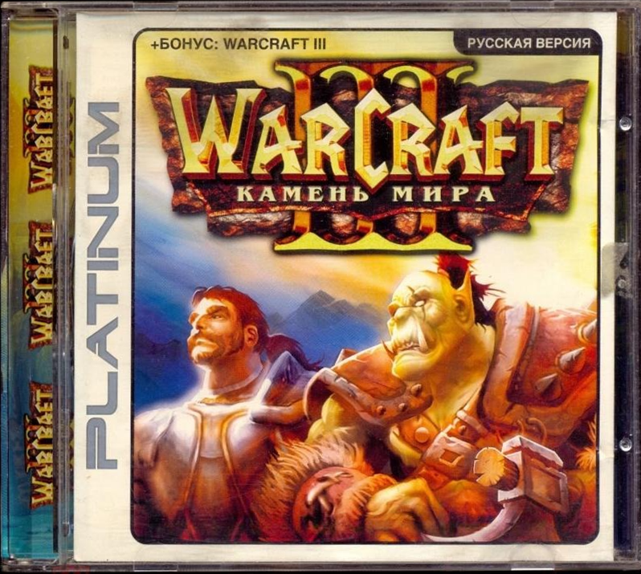
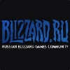
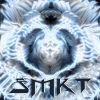
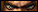
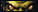
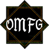

Путь "прогеймера"
Это адаптация моего первого поста в ЖЖ в далеком 2008 году. Оригинал был написан подростком и читается очень тяжело сейчас. Много непонятного внутреннего сленга, инсайт-шуток, смысл которых будет понятен только 2-3 людям, и все такое. Здесь я максимально постараюсь сохранить содержание и дух оригинала, никакой AI обработки, старые и новые грамматические ошибки, и хаотичные мысли. Enjoy! :)
Первое знакомство с Warcraft III
Как-то жарким летним днем 2003 года на выходных гуляя с папой мы (не помню я или он) решили купить себе новый монитор. В Воронеже тогда был популярный магазин "Игра" напротив "Электроники" где всегда стояли прилавки с кучей дисков для компьютера. Там мы купили БУшный ЭЛТ монитор 17 дюймов и я выпросил новую игру к нему. Мое внимание привлек диск "Warcraft III: Камень мира" с мордочкой орка (как потом оказалось это была полная русская лицензия от СофтКлаб для оригинала).

До этого я успел поигать в Warcraft II кампанию (на диске 170 игр на русском языке) и мне она очень зашла. Решил что и третья часть мне зайдет. Принесли домой монитор и диск, подключили, я установил варик и запустил.
Первое впечатление просто  уже после просмотра начальной заставки. Такого уровня качества роликов и сюжета я не видел ни в одной игре. Что ж, я сразу принялся проходить пролог за орков. Закрыл все окна и двери, чтобы никто не мешал, и погрузился в атмосферу этого нового дивного мира. По началу я даже не мог освоить абилки Тралла, не прокачивал их и не юзал, прошел пролог и без них. Просто до этого не играл в RPG совсем, а в WC2 такого не было =).
уже после просмотра начальной заставки. Такого уровня качества роликов и сюжета я не видел ни в одной игре. Что ж, я сразу принялся проходить пролог за орков. Закрыл все окна и двери, чтобы никто не мешал, и погрузился в атмосферу этого нового дивного мира. По началу я даже не мог освоить абилки Тралла, не прокачивал их и не юзал, прошел пролог и без них. Просто до этого не играл в RPG совсем, а в WC2 такого не было =).
Далее прошел кампанию людей. Ну прошел это мягко сказано. Каждую главу после пятой пытался пройти раз по 5. Придумывал план, стратегию, после каждого поражения снижал уровень сложности. Выходил во двор рубить кусты палкой, и размахивал топором чтобы зарядиться энергией орков. В своей игре делал ставку на защиту, а не атаку, вкладывал ресурсы в постройку башен. Башни строил не так как их строят современные игроки чтобы прикрывать ресурсы, а по краям базы одиночные башни и обстраивал фермами чтобы было красиво и эстетично. =) Очень понравилась шестая миссия, где надо остановить Малгануса и убивать мирных жителей быстрее него. (да вот такой я был кровожадный :D) Ну и конечно меня нереально поразил ролик в конце 9й главы где Артас убивает своего отца. Пересматривал его потом раз 5.
Со временем я почувствовал "силу" и как надо играть. В итоге я прошел одиночку (и последнюю главу тоже ;) раза с 10го). Играл в основном у папы, т.к. мой домашний Pentium 100 варик не тянул. Со временем купил дополнение Warcraft III: The Frozen Throne. Это была естественно пиратка ибо СофтКлаб еще не выпустили лицензию. Долго мучался с русификацией, в итоге как-то русифицировал надписи. (перевод был аля «промтовский» и шрифт Comic Sans MS)
Примерно в это же время когда гуляли со школьным другом Артемом (aka Hawk3r), я предложил ему поиграть в Warcraft III: RoC. Артем по началу отнекивался (до этого не играл в стратегии и не любил), но потом согласился. Первая его реакция была: «графика говно :D». Компьютер тогда у него был топовый (Pentium 4 1600Mhz, 256mb Ram, 64 mb GeForce2) и ему было с чем сравнивать (до этого играл в action-игры и шутеры типа Global Operations, Operation Flashpoint, Aquanox, Mafia и внезапно The Sims: Vacation (диск до сих пор у меня Хавк :D). Но поиграв несколько часов, варик все-таки пришелся ему по душе.
Параллельно с этим я прошел 2 кампании английского Ледяного Трона, и появилась идея приобрести русскую лиценцию от СофтКлаба. Мы скинулись с Хавкером и купили лицензионный комплект RoC и TFT от СофтКлаба (без оригинала дополнение не ставилось). Договорились играть по очереди, и прошли обе одиночные кампании. В общем-то, на этом все. Хорошо играть в "сражения" не получалось у нас обоих. Best kill - Computer (Easy). Ну еще как-то поиграли в RoC на уроке информатики (Сергей Юрьевич привет <3). Я уже тогда играл Нежитью, а Артем Альянсом. В тот раз мне с большим трудом удалось выиграть. Дальше время от времени поигрывал дома в сражения (кастомки с компом) или перепроходил отдельные понравившееся миссии одиночной компании.
Zadrot mode: ON
Помню что началось это осенью или в конце лета 2005 года. Я подключил свою мобилу Alcatel OT757 (до сих пор ее не обновлял :D) к компу по ИК порту через USB-IR ресивер, настроил MTS GPRS интернет, и началась "новая жизнь". Первым делом завел себе Email и ICQ. Потом прочитав компьютерный журнал зарегистрировал Webmoney кошелек, и в свободное время кликал по рекламным баннерам и разгадывал капчи, зарабатывая при этом половину цента за клик. Наконец руки дошли и до варкрафта. Нажал заветную кнопочку Battle.net и опана "Загрузка обновления". За час грузило 1%, подумал втопку это. Как раз удачно на помощь пришел Хавк, который поделился последним диском от журнала Страна Игр (он покупал практически каждый номер этого журнала) с патчем 1.18. Я поставил патч с диска, все получилось, зарегистрировал аккаунт, нажал "меч" (поиск игры 1x1) и понеслась. Из шести игр выигрывал в лучшем случае одну. (людей которые выходят сразу тогда почти не было). Это положение вещей очень сильно раздражало тогда. Я не понимал как мои противники так быстро все делают и везде успевают. У меня только гули строятся, у него уже химеры. :D
С этой проблемой снова помог журнал Хавка со стратегиями (все тот же Страна Игр). Мне понравился гуль-раш с DLом (Повелитель Ужаса), его в основном и юзал. Мой стат уверенно поднялся до 45%.
Как-то раз в школе, ко мне подошла одноклассница Оксана, этническая кореянка (видимо услышав наши разгововы с Артемом):
— Ты, я слышала, в Warcraft играешь?
— Ну да, типа того.
— Давай сыграем! Спорим, я тя сделаю?!
— Хахах, ну давай, попробуй.
Решили сыграть после школы. Я пришел домой в замешательстве и волнении, шанс показать себя, еще и девочка со мной заговорила, не может же она играть в варкрафт, куда ей. Чтож, позвонил Оксане на мобилу, договорился об игре. Захожу на Европейский сервер, канал Public Chat, жду. Сижу и думаю, вот дурак, ник то не спросил. Потом вижу Ho4Ka появляется на канале. Виспанул (whisper) - ответила. Можно играть. Она создала карту Две реки (как выяснилось спустя время очень популярная тогда соло карта). Я написал что не играл на этой карте ни разу, и попросил создать "Военную Хитрость" (самая первая карта по алфавиту в сражениях, на ней-то как раз никто не играет). Сменили карту, загружается игра – Эльф против Нежити. Я волновался очень сильно, даже не знал почему, руки тряслись, сердце билось быстро. Игра началась.
Я решил пойти в Лича и гулей вначале, потом добавить финдов, кат, абомов, и если повезет и игра затянется - вирмов. Начал ставить свой магазин, и omg - прибегает Демон (Deamon Hunter, первый герой эльфов) и сносит его, не дав даже достроиться 😡. До этого я подобных тактик даже не видел, обычно давали развиться вначале. Дальше выходит мой Лич, сразу получает Мана Берн, пару ударов-тройку ударов, бац-бац - Лич в алтаре (умер). Не понимал что происходит, она сносит меня одним героем, не могу ничего делать. Все-таки кое-как защитился Спирит Таверами (я апгреиживал зигураты до них всегда). Выдохнул, собрался силами, прихожу к ней на базу Личом 1го уровня и пачкой гулей, меня встречают 50 лимита дриад ДХ 4, Панда 2, и один протектор. Пишу gg (не знал тогда что это значит, но все писали gg когда сливали :D). Вижу ответное gg и выхожу. Сыграл примерно так же 3 игры в одну калитку без шансов.
Состояние мое тогда не поддавалось описанию. Я был в дичайшем гневе и негодовании :D. Наметил цель вынести эту "суку" любой ценой! Игнорил весь стеб и троллинг в мой адрес. В голове играла музыка из Rocky :D. Я был настроен серьезно. Сразу после игры встретился с другом Серегой (aka apm51, aka Crafty) и поделился впечатлениями. Он тогда тоже уже играл в Warcraft III и прошел одиночные кампании. После обсуждения мы двоем твердо решили стать про! Жить игрой, постоянно тренироваться и становиться лучше. Он выбрал основную расу орки, моя все также оставалась нежить.
Думая что в этой игре главное знания и стратегия, я пришел домой, вбил в Яндексе «Нежить против эльфа» и скачал 3 популярных страты BRu.Namo[3D] с использовнием CryptLorda в качестве первого героя. Потом вбил «Орки против эльфов» и скачал пару страт с использованием Far Seer + Tauren Chieftain + mass Head Hunters (2 барака через лесопилку) и дальше шаманы с бладластом (эта для моего друга apm51). Т.к. я был настроен очень серьезно то сразу сходил распечатал их на принтере, скрепил степлером, и принялся досконально все аспекты. Наша цель эльфы, нужен реванш! Я поделился мыслями и распечатками с Серегой, попробовали прогнать их в одиночке, и победы над средними AI не заставили себя ждать. Основная проблема была во время тратить ресурсы чтобы не копились, не забывать подстраивать юнитов даже в пылу битвы.
Начались усиленные тренировки в Ладдере и сидения на форумах Blizzard.ru и (популярном тогда) forum.wc3.ru. Дома интернет был плохой, но меня выручали бесплатные (их спонсировал Юкос) курсы программирования в институте повышения квалификации березовой роще. Там интернет был что надо, и можно было скачивать все на дискеты. На forum.wc3.ru была "группа разбора реплеев", и я этим воспользовался - выкладывал реплеи своих нубских игр против эльфов и не только (через КЛа по одной стратегии я тогда играл против всех чтобы не "потерять скилл" и максимально отточить страту убийства эльфа). Что удивительно, выложи я эти реплеи сейчас на каком-нибудь сайте меня бы "жетско обосрали", но там мне реально помогли. В основном давал советы старожил форума Next_Rim с ежиком на аватарке 🦔. Он сам играл через жука, но только против орков. Я смотрел все его демки, читал посты, и набирался опыта.
Одним днем я зашел с утра на этот форум и увидел новую тему с целой стратегией «Играя андедом против орка» by Next_Rim. Это то что мне нужно! Распечатал страту, изучил досконально, и глянул реплей пак некого n!CraftY, который был приложен к стратегии. Реплеи сильно вдохновили, и я решил побольше узнать о нем. Как оказалось это немец, играл за один из лучших немецких кланов n!Faculty[Raptor], и к тому же он выносил этой стратегией самого Grubby (хоть и один раз). Стал полностью копировать его страту против всех рас, она чуть отличалась от моей. Со временем я набрал неплохую форму и мог даже убивать игроков 20 уровня, мой stats поднялся до 49% на новом аккаунте QuadroX. Никнейм пришел в голову чисто случайно, была одноименная puzzle game на все том же диске 170 игр на русском языке, и я также читал в компьютерных журналах про некого прогеймера IntoX, и в моменте в голове просто щелкнуло.
Локальное комьюнити
Как-то с Серегой (apm51) пошли в наш ближайший дворовый компьютерный клуб RedFaction чтобы посмотреть кто из нас лучший на LANе. Оплатили час, создали карту, играем. Первую игру мне пришлось немного попотеть, а во второй была уже более уверенная победа. В то время после проигрыша сразу подключались эмоции и тильт, и по сути первая игра решала исход. Мой противник долго негодовал и не мог понять как я выигрываю совсем без микроконтроля (А-клик) с APM порядка 40-50. Я отвечал "банши имба" (тогда они давали дебаф на втором тире мощнее чем польза от tier3 Blood Lust шаманов). Действительно это была "идеальная страта" для игры с пингом 1000. Жуки сами появляются на автокасте, КЛ и пауки жирные (успеваешь отвести, закопать или кинуть коил), статуи автокаст, банши автокаст. Просто ИМБА-абуз.
Постепенно в соревновательный варкрафт еще втянулись выше упомянутый Hawker, и, тоже мой одноклассник, Plund. Хавкер очень долго упирался, и не хотел играть в варкрафт по мобиле, но когда я ему все-таки настроил Megafon GPRS - он втянулся. Plund же всегда играл дома с компами, и в основном 2на2. Через месяц мы вчетвером пошли в тот же клуб рядом со школой RedFaction "померяться письками". Сначала мы с Хавком наблюдали за сражениями Plund'a и apm51. В первой игре Plund талонами, все-таки убил всех троллей apm’а (несмотря на полную противиположность по типу брони и атаки). Во второй игре apm51 ставит андеда и берет CL, пытаясь играть как я, хотя до моего уровня он недотягивал, все-таки месяцы тренировок решают. Планд лидировал всю игру, но в самом конце отправив PoTM level 6 на базу к андеду (очевидно чтобы устроить фейрверк), в итоге забыл про нее и слил эту игру. На то время сильнее всех оказался я, потом apm51/Plund, и самый слабый Hawker. Потом все шло спокойно и размеренно. Я учил Хавка играть за хумов (даже сам на время перешел за них). Кидал ему реплеи gosu с прогеймера (4K.ToD, TMH]Storm, SK.Insomnia, WE.Sky), и помогал в разборе ладдерных игр.
Тем же летом нас позвала к себе та самая Оксана (Ho4ka), которой я проиграл с позором. Не только нас двоих, там была целая вечеринка с едой и кучей знакомых и не знакомых мне людей. Одноклассники, одноклассницы и старшики. Очень душевно тогда посидели. Там я познакомился с ее старшим братом Вовой (оказалось это он меня разнес ^^) и его другом Вадимом (aka Skiller) который даже участвовал в отборочных WCG по Warcraft 3 в нашем городе. Говорили о варкрафте, играли друг с другом за ноутами (Вадим и Вова всех побеждали без шансов), ели, пили. Постоянно приходилось вытаскивать Вадима из круга девочек чтобы поиграть или поговорить о варкрафте (такие тогда приоритеты были). Я помню как сильно охреневал от их уровня понимания игры, думал оба играют с мап-хаком, скорость клика была тоже бешеная. Хотел когда-нибудь стать таким же крутым как они, и взять ревашн теперь уже у Вовы. С Вадимом потом еще пересекались и ходили в компы в центре, клубы Deep Town (где ТЮЗ) и Portal возле ВГУ. В компах я первый раз выиграл какого-то эльфа который неплохо контроллил, используя тогда их легендарные мышки WMO от Microsoft. С Plund'ом часто гуляли вечерами по улицам и обсуждали исключительно варкрафт. Глаза горели, руки ускорялись, скилл рос.
Кланы
Конечно же в то время нам хотелось попасть в госу клан, но первым кланом для нас с Артемом стал клан CoRV (Club Of Real Vermins). Атмосфера там была теплая и дружеская. И вот подошел наш первый клан вар с французами из BZK ("абузеры" со статом 80-20, делаешь 0-20 и потом нахаляву растешь). Нас ставят в лайнап, и мы оба сливаем. Я слил русскому(!) орку Tim_Fedorovsky, а Хавкер эльфу французу bzk)SexyBedo (хочу заметить, что тогда у меня уже был модем 56К но не помогло). Потом наши ребята тащат. Kaboom(aka corv-steen-) выигрывает одного, fu_you_lose(aka corv-leon-) выигрывает другого и на 2x2 АТ техническая победа. Остальные наши кланвары не очень запомнились. Играли с такими кланами как puLs, AuRa, SToP.
И вот наступило мое самое яркое событие в карьере. Сидя на канале clan play (госу клан, участник WC3L где были Xyligan, Abver, Flash, Tama, Lyn, HRB) я увидел эльфа (или эльфийку ^^) с ником play.KristinA. Немного пообщавшись, я предложил ей сыграть и она согласилась (!). Создает карту Two Rivers, gn kristi, join, go? go! и понеслась. Я только успел поставить пару зданий, как она берет паузу на 30 минут (!), потом возвращается и пишет "ну вот я поела ;)". Глубоко вздохнув, я взялся за мышку, и мы продолжили играть. В этой игре я выложился на все 100%, старался как мог, руки потели и тряслись от волнения. В ней сошлось все для моего мини-ревашна и закрытия детской травмы, она тоже эльф, хорошо контролит, и тоже девочка. Что ж в ходе напряженной игры я ВЫИГРАЛ! БАНШИ ЗАРЕШАЛИ, переманил внезапно ее мишек! Я был просто вне себя от радости, побежал убиваться об стену (помните тот самый смайлик из QIP). Сохранил реплейку, распихал по разным носителям, похвалился маме :D. Потом еще узнал что она девушка play.Tama'ы (сильный эльф, смотрел 2на2 VOD на диске журнала Киберспорт с его участием, может даже это тот сильный протосс старкрафтер Tama) и он учит ее играть! Она говорила что иногда выносит Хулигана(тогда он конечно не так круто играл как сейчас) и Арчера (aka play.Archer, тот самый АРЧЕРИБО :D!). Транзитивный закон именно так и работает, поэтому я думал что я не просто крут, я мега-крут! Годы тренировок дают плоды. Подумал что надо бы еще сообщить об этом Хавкеру и скинуть демку. Так и сделал. Хавк оценил, заинтересовался, и решил тоже с ней сыграть. Я в обсерверах. К сожалению Hawker слил все матчи. Она даже "вы..ала" его разок соло-Алхимиком (тогда он не считался реальным героем, мем как скаут в стакрафте). Подумал что за такое надо точно мстить. Сыграл с ней за хумов – слил, еще сыграл – слил, ставлю андедов - она ставит тоже, и я снова сливаю UD vs UD. В миррорах я не силен, моя основная цель была эльфы, но больше ни разу не смог выиграть, просто фортануло в первый раз.
Далее все пошло как оранж сода , мы с Хавком тренились вместе, играли АТ по вечерам 2 хума. И наконец настал тот летний день когда Хавкер убил Апм51 со счетом 2:0.
Я долго сидел на прогеймере, читал форумы, и как-то раз скачал первый комент тогда еще малоизвестного JoTM.Cianid’а. Этот комент не был live, он был записан по реплею против орка Mystical. В нем была описана стратегия с использованием КЛ. Народ на прогеймере орал что-то типа "даешь жука в массы!" и часть людей как обычно троллили какой он нубас. Меня, конечно же, это все жуководство привлекало. Жук жука видет издалека. Затем выходит второй на этот раз LIVE аудио коментарий Cianid'a под смурфом Anihilator. И тут понеслась! Подобно Девиду Блейну, Цианид хлынул на просторы рунета. Его коронные фразы: «х.я как болт летит ваще пи..ец»; «он за..ал уже меня как сука»; и т.п. стали мега популярными. Потом добавился его друг npr.Petrov ака Петрович и золотые цитаты пополнились новыми типа «футмен не атакует по ястребу» и прочие в контексте тех времен. Тупые шутки Цианида обошли по популярности все что до этого было на прогеймере. Стали создавать темы про Цианида, покланаться ему, писать креативы например самый известный «Быть Богом». Отбросив все это, для меня в этих играх и комментах было немало пользы. Я познакомился с Цианидом лично, сидя на канале jotm (как и положено :o_god: он игнорил почти все личные сообщения) и расспрашивал его обо всех аспектах этой стратегии. Но радость была не долгой, кто-то нехороший хакнул progamer.ru, и нашумевшей карьере Cianid’а пришел конец.
Клан BRu
Ничто не вечно, тем более наш friendly клан CoRV. Настал момент и он распался. Мы с Хавком оказались "на улице". На тот момент моего скилла едва хватало чтобы убить нубоватых 30 lvl игроков, и я стал подумывать о новом клане. Сидя на канале clan kow3 я увидел BRu.RocketBoy’я (39лвл), который спамил в чате "кто 1x1?". Я ему написал, он посмеялся, очевидно увидев что я нуб со статом 49%, но все-таки согласился сыграть. Игра создана, карта Turtle Rock, в обсах вся бригада BRu (SkyFantom, FienD aka 64ru.venom, Strelok). Вдруг неожиданно для меня Rocketboy ставит орка, и это был мой шанс. Абьюзивная стратегия против которой он наверняка не играл против его off-race. Этот матч закончился моей победой! После него я загорелся желанием попасть в BRu - клан отцов, дедов и даже прадедов (я же давно сидел на blizzard.ru). Выложил демку этой игры на форум, написал Fiend'у и (oh my god) он меня взял! Был доволен как слон, создал новый акаунт BRu.QuaD, и с гордостью начал его раскачивать.
Поначалу мне везло, и я набил статс 9:2. Дальше пошла череда лузов, доходило до того, что мне прихошлось немного проабузить чтобы хоть как-то выигрывать (очень высокая значимость каждой игры влияла, я же лицо клана). В BRu недели через 2 взяли и Хавкера по моей просьбе, тем более у него тогда был реальный 30 лвл, и играл он тогда уже сильнее меня, или примерно так же. Клан-вары по началу были практически каждую неделю, их особенно я не запомнил, кроме одного "решающего" BRu vs BRuT. BRuT это соседний клан с того же форума "Blizzard.ru hello team". После этого кланвара произошло объединение двух кланов BRu+BRuT=BRu. Вождем по прежнему оставался BRu.en[er]gy. Практически все "крутые" игроки старого BRu ушли после объединения (RocketBoy, Phob, Fiend, Strelok, Other, Podj, Ghoul, Pornostar, Mortal, Quack, Qwelp, Captain и др.) Сменилась власть. Фактически оргами были Хорь (aka OMFG.SamHarker) и Fearless (aka Dream, Flatliner, ныне орга rGt), а ну еще и WWolf помогал (хз где сейчас :D).
В новом составе кланвары по прежнему были раз в неделю. Мы даже зарегались на RWL квали, но к сожалению не прошли в основной сезон. Хорошо запомнился кланвар против SMKT (довольно сильный RUS-1 клан). На нем даже сыграл BRu.Podj и застроил андеда через АМ+ФЛ. Но главное, под конец счет был 2-2 и все решало АТ. Заявленного партнера у Эни (BRu.en[er]gy) не было, и тут (к счастью) на канал clan bru заходит сам BRu.Namo (aka BRu.Namo[3D], aka CTEPX, легенда, и автор самой первой стратегии через жука по которой я играл) и залетает как второй партнер для 2x2. Страсти накаляются, все слоты обсерверов забиты. Вместе с Эни они выигрывают решающий матч 2:0!
|
 |
3:2 |
 |
 BRu.rrOk
BRu.rrOk
|
0:2 |
ro95us)frost
 |
|
BRu.FunkyByte
|
0:2 |
Smkt)Vadya
|
| BRu.Podj | 2:0 |
Smkt)Darkpower
|
|
BRu.Winner
|
2:0 |
Smkt)Paradocs
 |
|
BRu.Namo
BRu.en[er]gy
|
2:0 |
givefreewin
Smkt)Paradocs |
Еще ярким был кланвар с OMFG когда Хавкер играл пьяный на дне рождения дома у Apm51, а я записывал аудио-комент в формате *.amr на мобилку нашего одноклассника Димы :D. В самый разгар игры ему позвонила бабушка прямо во время записи коммента, пришлось прерыватья и как-то выруливать.
| 2:3 |
 |
|
| BRu.toldtobegood | 2:1 |
OMFG.inferno666
|
|
BRu.rrOk
|
2:1 | OMFG.Luck |
|
BRu.nonstd
|
1:2 | OMFG.defuzer |
| BRu.Hawker | 0:2 |
OMFG.Pulse
|
|
BRu.nonstd
BRu.shadows |
0:2 |
OMFG.Pulse
OMFG.Xekcep |
Весело проводили время, но вскоре BRu распался. Скорее всего, потому что не было мотивации идти дальше у людей которые занимались организацией. Сначала ушел Dream, потом Хорь, а WWolf и Energy не подобрали эстафету и в итоге решили распустить клан.
Примерно через месяц после развала BRu я попался в ладдере с неким Navi)Grin6o, и спросил о требованиях на вступление к ним в клан. Он ответил, что достаточно просто быть читателем журнала Навигатор Игрового Мира и иметь 20 лвл battle.net. Про себя подумал "Ну и чего же я жду?". Написал Skilurd’у, прошел тест с вопросами типа «что изображено на обложке навигатора за февраль?» и меня взяли, но с условием – нужен новый аккаунт. Пришлось вернуться к своему старому доброму QuadroX’у и качать его. Как только я вступил, сразу начался внутриклановый турнир - отборочные во 2й состав. Там надо было сыграть по системе каждый с каждым бо3 на очки. Самое время проявить себя. Что ж, проиграл Navi)Nice’у 1:2, alex’у(ака Element) и Райсе 0:2 (просто хуман, у меня с ними плохо). Остальных выиграл. Скай (Skilurd) меня всячески поддерживал и помогал. Отличный орга, и хороший друг. Приятно было находится с Lonely и Miker'ом в одном клане.
Domolink & play.vsi.ru
Прошло какое-то количество времени, и Hawker подключил ADSL интернет через провайдера Domolink, открыв ящик пандоры. Это был самый высокоскоростной интернет тогда, почти как выделенка, не сравнимо с 56K модемом, настоящий прорыв технологий. Мы с Серегой (apm51) конечно же подключили такой интернет себе тоже, почти сразу. Первым делом скачали с торрентов WoW 1.08 US для игры на сервере Warik.net и надолго там залипли. Не буду описывать все свои приключения в WoW, скажу только что это месяцы, потраченные "впустую". Сначала там, потом у нас появились локальные WoW сервера. Поиграл месяц на Фрозене, потом забил и решил глянуть VSI Server Warcraft III.
Зашел туда и стал искать жертву среди Воронежцев. :D Первым попался Skiller, которому я проиграл 2 раза в ноль без шансов. Затем поднапрягся и выиграл таких известный "прогеймеров" как Prorok, Nuclear, DoOmg, Viper, MazayMZ, Skat, Areah и споткнулся об zombi. Как не пытался, сколько не играл, но победить его я так и не смог. Зато взял свой долгожданный реванш над Вовой Ким и разок смог выиграть у Вадима. Затянули в варик друзей из параллельного класса: Bodi_Totos, QuickSilver, Edison. Они набрали неплохую форму.
Дальше играть становилось сложнее, я ощутимо терял скилл из-за того что много времени проводил в WoW, а мои противники становились сильнее а адаптировались к моей страте. Меня начали без труда выносить Prorok, Viper и Nuclear. Обидно, досадно, но ладно, опустился вниз по рейтингу.
Пока играл на vsi успел вступить в клан QST, который на мой взгляд был самым сильным (туда же потом вступил и Hawker). На серваке был еще один клан, где играли Zombi, Sagarus (aka Latnik), Skat. Название того клана я забыл. И еще был молодой клан sYs (Simeone, RooGa, Canker). Решили мы как-то устроить кланвар QST vs sYs. После матча RooGa vs Viper, Руга сидя уже в обсах, сказал что играет в WoW на сервере YUG, и сильно отвык от wc3. Я узнал что у него там орк шаман с ником Grubby. И вот здравствуй мой годовой инактив. Я создал там шамана Farseer и понеслась. Пропал из жизни. А чуть позже летом я затянул туда еще и Хавкера. Мы оба вставали в 7 утра и начинали качаться. Наконец зимой или в конце осени прошлого года я набил 70 левел, правда уже магом QuadroX’ом. Немного побегал по Outland'у (месяца 2) и удалил WoW с компа. Хавкер тоже забил и остановился на 67 уровне рогой.
Конец пути
После удаления WoW я постепенно снова я вернулся к тренировкам. В марте мы с ребятами создали клан SyTe (sYs Team) на battle.net (потому что имя sYs было занято). Я начал играть с новыми силами, но вскоре понял, что упущенного не вернуть. Уровень игроков возрос в разы, даже средние игроки неплохо контроллили и гораздо лучше понимали игру. Нельзя было просто тащить за счет имба-стратегии. Просто стратегия уже не работала, нужны стали прямые руки, микро, и глубокое понимание игры. Ничего не мог поделать с масс-танками и башнями. Дошло до того что сразу выходил как мне попадался хуман. Потом пробывал все-таки как-то отыграть, но из 10 игр UD vs HU в лучшем случае выигрывал одну. Зато добился успехов с орками, выигрывал даже fair.Federal'a (щас хз где он). Но чем сильнее орк, тем сильнее он давит жука в начале игры непрерывным харассментом блейдом и грантами. Статс против хумов уже недотягивал до 10%, все мои встречи с хуманами (и с Хавкером в том числе) заканчивались одним и тем же, но я продолжал играть.
Через какое-то время интерес к игре пропал совсем. Из-за этой беспомощности и выгорания играть резко расхотелось, пропала всякая мотивация. Может был новый этап взросления, или основная цель уже была выполнена. В клане sYs я стал помогать с организацией, заниматься сайтом, обсить кланвары и делиться своей "игровой и жизненной экспертизой" (aka х..сосить людей) в чатах.